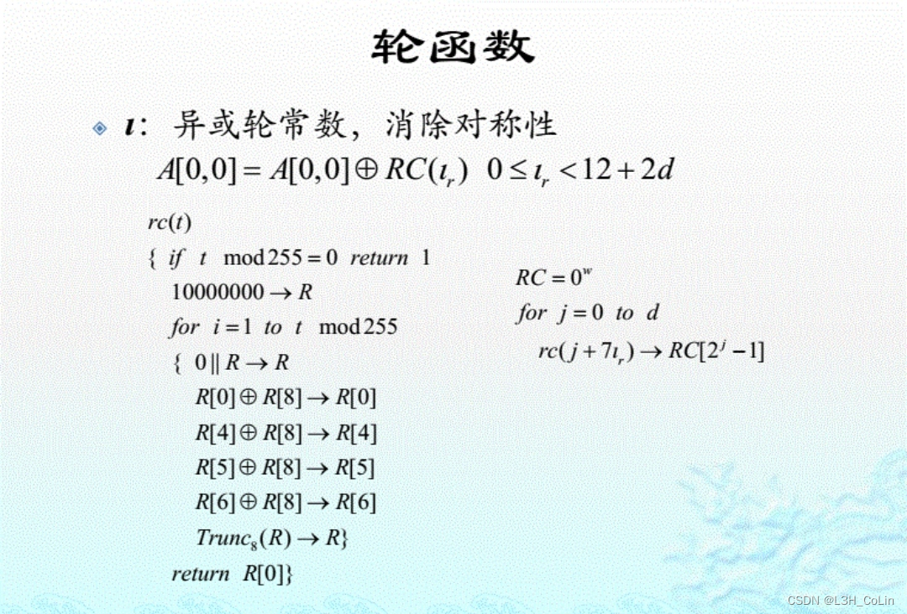

4.1 数据完整性
信息安全的三个要点：机密性、完整性、可用性
被动攻击：攻击者只能监听；主动攻击：攻击者可能会干扰通信
- 数据完整性是对抗对消息未授权修改的安全服务
- 有些应用不需要机密性
解决完整性问题：添加冗余 - 对称技术：Hash函数（散列函数），报文鉴别码（MAC）
- 非对称技术：数字签名
Hash函数
H(M)作用于一个任意长度的消息M，返回固定长度（通常超过128比特）的散列值h：
h=H(M)
- 有时也称为摘要函数、散列函数或杂凑函数
- h也被称为消息或数据的“摘要”或“指纹”
- 带密钥的Hash函数：可以将h和M一起在不安全的信道中传输
- 不带密钥的Hash函数：h必须安全存放以保证h不被篡改
作用：
- 口令保护
- 构造报文鉴别码HMAC
- 数字签名
- 伪随机数生成器
要求：
- 快速：给定M，很容易计算h
- 单向：给定h，根据H(M)=h无法计算出M
- 防碰撞：给定M，要找到另一条消息M’并满足二者摘要相等困难或找到任意两个具有相同散列值的不同消息困难
假定h：X→Y，|X|≥|Y|，设x∈X，定义y=h(x)
- 单向性（原像稳固性）：给定摘要y，找到x使得h(x)=y困难
- 第二原像稳固性：给定消息x∈X，找到一个x’∈X且x’≠x，使得h(x)=h(x’)困难
- 碰撞稳固性：对于任意x，x’∈X，找到x≠x’且h(x)=h(x’)的二元组(x，x’)困难
理想的Hash函数应该满足：对于给定的x，只能通过函数h计算得到h(x)的值，而无法通过其他条件得到；已知h(x1)，h(x2)，…，无法间接推出h(x)，其中x与x1，x2，…均不相等
随机预言机ROM
- 提供“理想”Hash函数的数学模型
- 确定性、有效性和均匀输出
令是所有从X到Y的函数集合，假定|X|=N，|Y|=M，随机从中选择一个Hash函数h：X→Y，对于任意的输入x，其输出值为均匀的，计算h(x)的唯一方法是询问随机预言机。
定理：假定随机选择，令，假定当且仅当时。h(x)被确定，则对所有的都有
原像问题
Find - Preimage(h, y, Q)
选择任意的
for each x∈X0
do: if h(x)=y then return(x)
return (failure)
对于任意的，算法的平均成功率为
证明：给定y∈Y，令X0={x1，x2，…，xQ}
对于1≤i≤Q，有
则有
对于任意给定的y的成功率是常数，故结论成立。Q远小于M，故（舍弃了后面的M-1的高次项）
第二原像问题
拉斯维加斯算法
Find - Second - Preimage(h, y, Q)
y=h(x)
选择
for each x0∈X0
do: if h(x0)=y then return(x0)
return failure
对于任意的，算法的成功率为
碰撞问题
生日攻击
Find - Collision(h, Q)
选择任意的
for each x∈X0
do yx=h(x)
if 对某一x’∈X，有yx=yx’
then return (x,x’)
else return (failure)
对于任意的，算法平均成功率为
证明：
对一个输出空间大小为M的随机函数，只需要计算大约个函数值就能够以一个不可忽略的概率发现一个碰撞。因此Hash函数的输出空间大小必须有一个下界。
安全性准则的比较
Collision - To - Second - Preimage(h)
external Oracle - 2nd - Preimage
均匀随机选择x∈X
if Oracle - 2nd - Preimage(h,x)=x’
then return (x,x’)
else return (failure)
碰撞问题可以归约到第二原像问题，因此可以说碰撞稳固性质意味着第二原像稳固性质。
Collision - To - Preimage(h)
external Oracle - Preimage
均匀随机选择x∈X
y←h(x)
if (Oracle - Preimage(h, y)=x’) and (x≠x’)
then return (x, x’)
else return (failure)
定理4.5 假定h: X→Y是一个Hash函数，其中|X|和|Y|有限且|X|≥2|Y|。假定Oracle - Preimage对固定的hash函数是原像问题中的一个(1, Q)算法，则Collision - To - Preimage对固定的Hash函数时碰撞问题的一个(1/2, Q+1)算法
使用随机预言机模型中理想Hash函数是困难的，可以参考一些分组密码理论构造尽可能接近理想特性的Hash函数。（混乱、扩散、随机）。可以基于数学难题构造方法，但计算速度慢，不实用。因此可以使用对称密码体制来设计Hash函数，或者直接设计。
4.2 常用Hash函数
Hash函数通用结构：迭代结构
MD5
填充
最后一块的最后8个字节（64bits）保存的是输入的长度。如果消息正好是分块的整数倍，仍然需要填充一整块，其中前面为10000…（填充内容），后面为输入长度。如果消息过长（大于2^64 bits），则将消息模2^64（仅取低64位）计算MD5。（消息长度为小端序）
压缩初始化
初始化4个字寄存器，填入CV0（0x67452301，0xEFCDAB89，0x98BADCFE，0x10325476，固定不变）
压缩

SHA1
填充
与MD5基本相同，不同的是SHA1最后的输入长度为大端序而MD5为小端序
算法
一共执行80步后输出
其中F1用于第0-19步，F2用于第20-39、60-79步，F3用于第40-59步
二者比较
摘要长度：寻找原像与碰撞
速度：SHA1速度慢于MD5
简洁与紧致性：描述和实现都较为简单，无需更大代换表
数据存储方式：小端序和大端序
安全性：SHA1优于MD5
SM3
- 遵循通用迭代结构
- 输出为256比特的摘要，消息长度小于264，按照512比特分组
- 过程包括填充和迭代压缩，填充方式与MD5相同
- 压缩函数使用8个字寄存器，大端序存储，同SHA1，一共执行64步
- 输出为160bit
压缩函数：将Yi扩展为132个字用于压缩函数CF（ABCDEFGH）

SHA3
采用海绵结构，可以实现任意长度的输入和输出
填充
首尾填充1，中间填充0，整数倍也要填充
即若原来的明文不一样，填充完之后应该也不一样。



MAC
报文校验码，满足某些安全性质的带密钥的Hash函数，功能是保证数据完整性以及数据源认证
可以通过不带密钥的Hash函数构造：HMAC
也可通过对称密钥算法构造：CBC-MAC
ipad = 3636…36
opad = 5c5c…5c
HMACK(x)=SHA-1((Kopad)||SHA-1((Kipad)||x))【||表示连接】
通过嵌套Hash函数以保证MAC的安全性。一旦结构安全，则可以替换其中的Hash函数
CBC-MAC(x,k)
令x=x1||…||xn
IV←00…0
y0←IV
for i=1 to n
do yi=ek(yi-1xi)
return yn
加密算法具有混乱特性，当基本加密算法满足合适的安全性质时，CBC-MAC是安全的
CCM模式：CTR+CBC-MAC
Ti=ctr+i mod 2m，x=x1||…，yi=ek(Ti)xi
temp = CBC-MAC(x, K)，y’ = T0temp，y=y1||y2||…||y’
攻击方式：
- 暴力破解
- 字典攻击（针对于口令）
- 彩虹表
对随机口令取哈希值，再通过一个从Hash值空间到口令空间均匀分布的函数R，获取到这个口令Hash取函数R后的另一个口令。如此进行下去可以获取到一个口令-Hash-口令-Hash-…的链，可以获取多个这样的链，在存储时只需要存储每条链的第一个和最后一个口令即可，可以大大节省存储空间。
如果哈希值为H的口令不是Pi,j中的任何一个，那么在这条链上一定找不到
如果彩虹表链长上界为n，若Hash值为H0的口令是Pi,j中的某一个，最多n次运算后能够使得Pi等于彩虹表中某条链的链尾
为了防止不同链的碰撞，需要使用多个R函数
Cain，RainbowCrack等免费使用的公用彩虹表，但主流支持10字符一下的口令。采用salt（盐值）能够有效对抗彩虹表